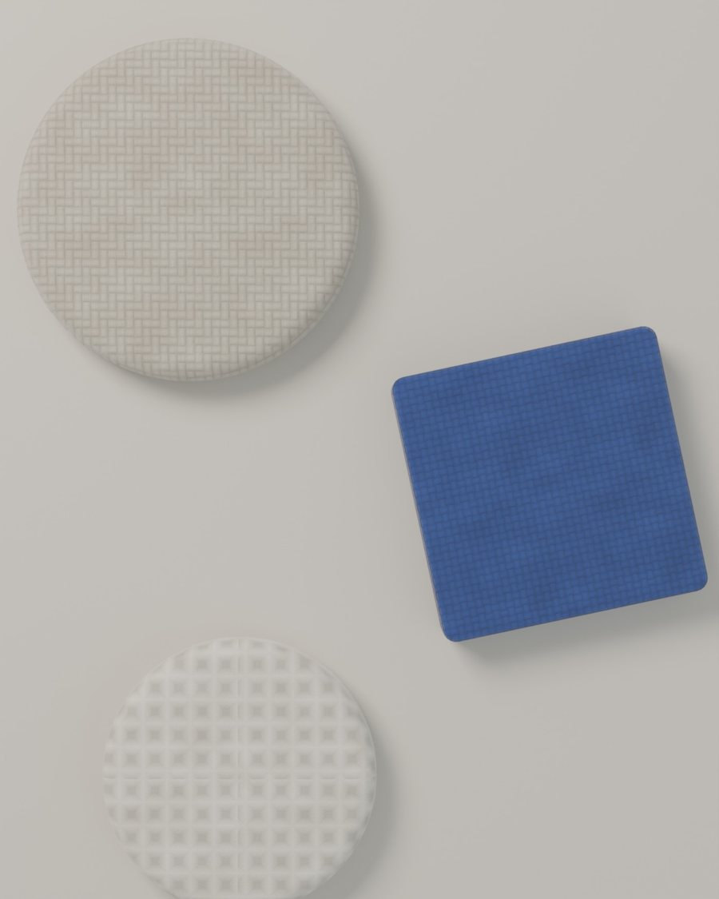
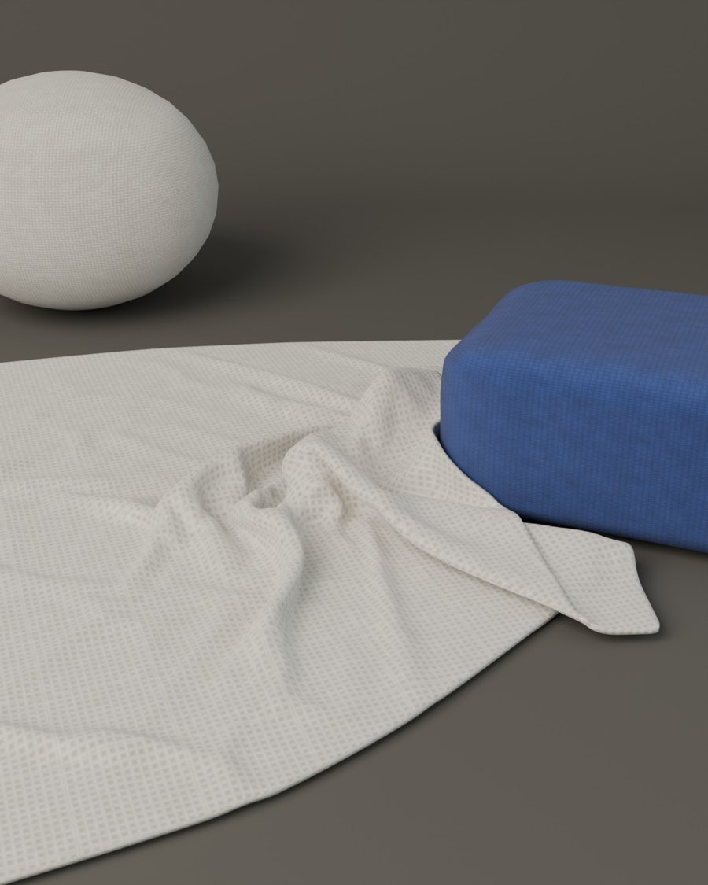
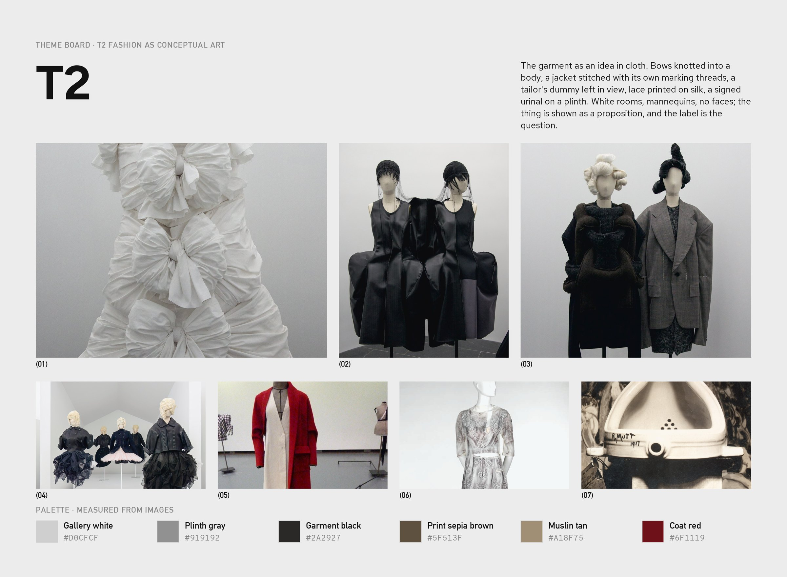

Every product a readymade
First the hand, then the choice.



Overall mood
The garment as an idea in cloth. Bows knotted into a body, a jacket stitched with its own marking threads, a tailor's dummy left in view, lace printed on silk, a signed urinal on a plinth. White rooms, mannequins, no faces; the thing is shown as a proposition, and the label is the question.


Test
A photo cannot show intention or authorship; it can only show the proposition. Intention stays unproven by any image here.
Motifs
01 The body redrawn. From "Kawakubo": cloth as sculpture that changes the body's outline. Images (01), (02). Fit: strong.
02 Construction shown as the idea. From "Margiela" and "authorship": basting stitches left in, stitches outside the seam, the tailor's dummy in view. Images (03), (04), (05). Fit: strong for (03), (04); (05) is a plain coat on a dummy, moderate (see tagging).
03 The garment quotes a garment. From "brand as apparatus": a dress that prints another dress. Image (06). Fit: weak, one image only.
04 The signature makes it art. From "authorship" and the test (does the idea survive without the label): a signed readymade where signature and plinth carry the proposition. Image (07). Fit: weak as fashion; it is the art-side anchor, not a garment.
Weak motifs: 03 and 04 have one image each. No motif yet covers "brand as apparatus" directly (label, logo, store, edition); the blank white label of Margiela was not found as a cleared image.
Against
The look carried by the label alone: logo as content, a garment with no proposition behind it. Open item.
Color direction
The measured palette below is what these particular museum photos happen to show (white galleries, black and gray cloth); it describes the board, not a rule for T2.